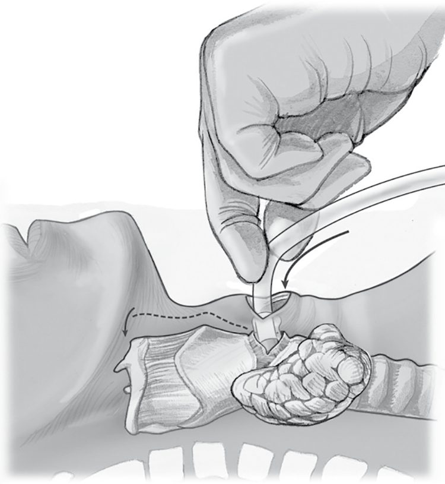

ATLS Primary and Secondary Survey
Summary
- Advanced Trauma Life Support (ATLS) is the globally adopted standard for the initial assessment of the injured patient, built around a primary survey that identifies and treats immediately life-threatening conditions in priority order, followed by a secondary survey that is a comprehensive head-to-toe examination to uncover other injuries [1][2].
- The course was first developed after a 1978 Nebraska plane crash and has been adopted throughout the world, training more than 1 million providers [1].
- ATLS rests on three core concepts: treat the greatest threat to life first, lack of a definitive diagnosis should not delay urgent treatment, and a detailed history is not essential to begin evaluation and treatment [1].
Definition
ATLS is a systematic, rapid initial assessment protocol comprising preparation, triage, primary survey (ABCDE), resuscitation, secondary survey, continued monitoring/re-evaluation, and definitive care [2]. The primary survey is designed to quickly detect and address life-threatening injuries using a universal prioritized sequence; the secondary survey is a detailed, comprehensive clinical evaluation performed only once the primary survey and resuscitation have normalized vital functions [3].
Pathophysiology
- ATLS teaching recognizes that injury kills in reproducible time frames and in a common sequence: loss of airway, inability to breathe, and loss of circulating blood volume, followed by expanding intracranial mass [2].
- Trauma deaths occur in three temporal peaks: the first (0–30 minutes) from unsurvivable lacerations of the heart, aorta, brain, brainstem, or spinal cord; the second (30 minutes–4 hours, the "golden hour") from head injury and hemorrhage, which are salvageable with rapid assessment; and the third (days to weeks) from multisystem organ failure and sepsis [4].
- Loss of a secure airway can be lethal within four minutes, which is why airway takes absolute priority in the primary survey regardless of mechanism [3].
Clinical features
- Airway compromise is suggested by disordered speech, agitation, noisy breathing (stridor), inhalation exposure history, and visible facial trauma (mandibular fracture, burns, penetrating injury, oropharyngeal blood or foreign body) [1].
- Breathing compromise is suggested by paradoxical chest wall movement, retractions, hypoxia, cyanosis, decreased or absent breath sounds, tracheal deviation, and distended neck veins, features of tension pneumothorax, open pneumothorax, massive haemothorax, or flail chest [1][2].
- Circulatory compromise (shock) is indicated by agitation or confusion, tachycardia, tachypnoea, diaphoresis, cool mottled extremities, weak distal pulses, decreased pulse pressure, decreased urine output, and hypotension [1].
- Neurological disability is assessed via the AVPU scale (Alert, responds to Vocal stimuli, responds to Painful stimuli, Unresponsive) and the Glasgow Coma Scale [2][5].
Etiology
- Blunt trauma accounts for approximately 80% of all trauma, with the liver most commonly injured; penetrating trauma most commonly injures the small bowel [4].
- Hemorrhage is the most common preventable cause of death after injury [5][6].
- Major thoracic life-threatening injuries include tension pneumothorax, open pneumothorax, massive haemothorax, and flail chest with pulmonary contusion [2].
Diagnosis
- The primary survey follows the sequence "xABCDE": eXsanguinating external haemorrhage control, Airway with cervical spine protection, Breathing, Circulation, Disability, and Exposure/Environmental control; the 11th edition of ATLS (2025) modified the traditional ABCDE sequence to xABCDE to prioritize immediate control of massive external haemorrhage [1][6].
- Adjuncts to the primary survey include continuous monitoring (pulse, non-invasive blood pressure, ECG, pulse oximetry, arterial blood gas), urinary and gastric catheters, and diagnostic studies such as lateral cervical spine, chest and pelvis X-rays, FAST, and CT [2].
- Diagnostic peritoneal lavage has largely been supplanted by FAST/eFAST because ultrasound is non-invasive and can be performed rapidly in the trauma bay [1].
- The secondary survey begins only after the primary survey is complete and vital signs have normalized; it comprises a head-to-toe physical examination together with the AMPLE history (Allergies, Medications, Past illness/pregnancy, Last meal, Events/Environment of injury) [1][2].
- A tertiary survey, repeating the secondary survey pattern the day after admission once altered consciousness has resolved, is used to detect missed injuries, which may occur in 1%–40% of trauma patients [1][6].
Scoring and Severity
- The Glasgow Coma Scale (GCS), scored from eye opening (1–4), verbal response (1–5), and motor response (1–6), is calculated during the primary survey (Disability) and re-evaluated at the secondary survey; a severe head injury is assumed at a GCS of 8 or less, which is also an indication for a definitive airway [1][2][6].
- The AVPU scale (Alert, Vocal, Painful, Unresponsive) provides a faster, cruder alternative disability assessment [2][5].
- ATLS defines four classes of haemorrhagic shock based on blood loss volume and physiologic response [1].
- The Assessment of Blood Consumption score, a 4-point metric (penetrating mechanism, positive FAST, arrival SBP ≤90 mmHg, arrival pulse >120 bpm), can be used to trigger massive transfusion protocol activation [1].
Treatment and Management
- Exsanguinating external haemorrhage (x): controlled immediately with direct pressure, wound packing with haemostatic dressings, and tourniquet application proximal to the wound if bleeding is not controlled by pressure, before formal airway management if necessary [1][6].
- Tourniquet time of application must be recorded, and tourniquets should be converted to another method of haemorrhage control within 2 hours once shock has resolved and transport/monitoring conditions allow [1]. Airway (A): cervical spine motion restriction is maintained throughout; airway is secured stepwise from suctioning/jaw thrust/chin lift and oro- or nasopharyngeal airway to definitive orotracheal intubation (often with rapid sequence induction) or surgical airway (cricothyroidotomy) if intubation fails or is contraindicated [1][6]. "Damage control airway maneuvers" (opening/maintaining the airway without immediate intubation while resuscitation proceeds) may reduce peri-intubation cardiovascular collapse in hypotensive patients [1]. Breathing (B): all patients receive high-flow oxygen; tension pneumothorax is treated by immediate needle/finger decompression followed by tube thoracostomy without waiting for radiographic confirmation, as it is a clinical diagnosis [1][2].
- Open pneumothorax is occluded with a three-sided dressing followed by chest drain insertion through a separate incision [2]. Circulation (C): two large-bore IV cannulae (≥16G) are placed, blood sent for cross-match and labs; a pelvic binder is applied to haemodynamically unstable blunt trauma patients and not removed until pelvic fracture is excluded [6].
- Permissive hypotension (target systolic BP 70–90 mmHg, or >90 mmHg with suspected head injury) with small boluses of fluid is used until definitive haemorrhage control, minimizing crystalloid; balanced blood-product resuscitation (1:1:1 red cells:plasma:platelets) via a massive transfusion protocol is preferred over crystalloid [1][6].
- Tranexamic acid (1 g IV over 10 minutes, then 1 g over 8 hours) reduces mortality from bleeding when given within 3 hours of injury [1][6]. Disability (D): GCS and pupillary assessment are documented before sedation/intubation drugs are given; secondary brain injury is prevented by maintaining oxygenation and perfusion [1][2]. Exposure (E): the patient is fully undressed for examination while active measures (warmed blankets, fluids, elevated room temperature) prevent hypothermia, which worsens coagulopathy [1][6].
- Whole-body CT (head to pelvis with IV contrast) is the gold-standard investigation for the haemodynamically stable, severely injured blunt trauma patient and should not be limited to selective body systems [6].
- Log-rolling and pelvic "springing" are avoided until pelvic fracture is excluded, as they can dislodge clot [6].



Surgeries
- Surgical airway (cricothyroidotomy) is performed when intubation fails or is not feasible: a vertical skin incision over the cricothyroid membrane, transverse incision of the membrane, dilation, and insertion of a size 6 endotracheal tube, confirmed with capnography and bilateral auscultation [1].
- Needle or finger thoracostomy for tension pneumothorax is performed at the second intercostal space midclavicular line, or the fifth intercostal space between the anterior and midaxillary lines, followed by formal tube thoracostomy [1][2].
- Resuscitative thoracotomy in the emergency department may be indicated in select patients (primarily penetrating thoracic injury with signs of life) to release cardiac tamponade, control cardiac or intrathoracic vascular injury, and cross-clamp the descending thoracic aorta [1].
- Emergent laparotomy or pelvic packing is indicated for haemodynamically unstable patients with a positive FAST or unstable pelvic fracture with ongoing bleeding not controlled by external binder [1][6].
Complications
- Missed injuries occur in 1%–40% of trauma patients (15%–22% clinically significant), related to altered consciousness, emergency surgery, and distracting injuries, mitigated by the tertiary survey [1].
- Prolonged tourniquet application (>2 hours) causes amputation, rhabdomyolysis, and neuropathy [1][5].
- Excessive crystalloid resuscitation worsens acidosis, causes coagulopathy, and is associated with ARDS; hypothermia from inadequate exposure/environment management exacerbates coagulopathy and acidosis [1][5][6].
- Formal log-rolling and pelvic springing in a patient with an undiagnosed pelvic fracture can dislodge stabilizing clot and provoke rebleeding [6].
Prognosis
The "golden hour" concept reflects that medical care during the second mortality peak (30 minutes–4 hours after injury), when death is due to salvageable head injury and haemorrhage, has the maximum impact on reducing death and disability; it implies urgency rather than a literal fixed 60-minute window [2][4]. Patients presenting after cardiopulmonary resuscitation with no vital signs have a resuscitative thoracotomy survival of under 1%, whereas those in shock have approximately 2% survival, underscoring the importance of the structured, rapid primary survey in maximizing salvageable outcomes [7].
References
- Sabiston Textbook of Surgery, 22nd ed., Ch. 36 Management of Acute Trauma
- Oxford Handbook of Clinical Surgery, 5th ed., Ch. 15 Major trauma
- Maingot's Abdominal Operations, 13th ed., Ch. 19 Abdominal Trauma
- The ABSITE Review, 2022, Ch. 15 Trauma
- Browse's Introduction to the Symptoms and Signs of Surgical Disease, 6th ed., Ch. 5 Major injuries
- Bailey & Love's Short Practice of Surgery, 28th ed., Ch. 27 Early assessment and management of severe trauma
- Schwartz's Principles of Surgery: ABSITE and Board Review, Ch. 7 Trauma